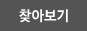
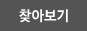

버튼들은 클래스만 넣고, Button, A, Span 등 태그에서 동일하게 사용
- 이미지 버튼 - btnImg class
-

- 이미지 버튼 종류
-


 

- 라운드 버튼 - btnRound | btnRound btnRoundBlack
- 최근 1개월 최근 3개월
- 작은 사각형 버튼 - btnSquare | btnSquare btnSquareBlack
- 적용적용 적용